- Index
 ImageMagick Examples Preface and Index
ImageMagick Examples Preface and Index
 Video to GIF, Optimization Summary
Video to GIF, Optimization Summary
- De-interlace a Video Frame
ImageMagick is not particularly suited to the handling of Digital Video
handling, but it is commonly used for this purpose, especially in the Linux
environment.
Here I explore techniques and examples that are specific to handling of real
life (and raytraced) video sequences.
Video to GIF, Optimization Summary
A software developer who uses IM to create Movie GIFs,
Benoit Rouleau, in discussion
with me, gave me an AVI video of a
plane flying over,
to help us mutually explore IM video conversion techniques.
However while the AVI itself is quite small, the uncompressed video
is a massive
![[IM Text]](plane_avi_size.txt.gif)
bytes in size, and involves
![[IM Text]](plane_avi_ncolors.txt.gif)
colors, over
![[IM Text]](plane_avi_frames.txt.gif)
frames.
IM however has no real trouble converting this video into a GIF animation.
However be warned that you will probably get some unsupported 'AVI chunk'
errors, which can be ignored by using a "-quiet" control setting.
convert -quiet -delay 1 plane.avi plane.gif
| |
![[IM Output]](plane.gif)
|
This used ImageMagick's the default
Color Quantization
and Dithering methods, to produce a very reasonable conversion of the video.
Very few color problems exist, because the video uses very few colors to
start with. This is not always the case, especially as GIF has 256 colors
per frame limit.
However the animation file is
![[IM Text]](plane_size.txt.gif)
bytes in size, which while only 1/5th the size, due to color reduction and GIF
pixel data compression, it is still rather large.
Also if you study the resulting animation further you will find that of the
frames in the image,
![[IM Text]](plane_ctables.txt.gif)
frames had their own own separate
local
color table added. That is each and every frame in the GIF animation
required there own color index table. That is while each frame has less that
256 colors (due to the GIF format limitations), the whole animation is using a
total of
![[IM Text]](plane_ncolors.txt.gif)
colors.
Unfortunately the GIF format does not compress color tables, so all those
extra color tables could be using up to: 256 colors * 3 byte per color
* 106 frames; or 81,408 bytes of file space. Not a lot for a 1Gbyte
video but still an appreciable amount of space, especially as we optimize the
video further.
Added to this is that the animation will not GIF frame optimize very well. Not
only because the background is moving (due to the camera panning upward), but
also because IM used a
Error Correction
Dither (Hilbert Curve Dither), which produces a pseudo-random pattern of
colors that is different from frame to frame. A later example will make this
'dither noise' much more visible.
Common Global Color Table
Here I Generate a Single Global Color
Table for all the frames of the video.
convert -quiet -delay 1 plane.avi +map plane_cgc.gif
|
This naturally results in
![[IM Text]](plane_cgc_ctables.txt.gif) local color tables, and a file size of
local color tables, and a file size of
![[IM Text]](plane_cgc_size.txt.gif) bytes.
bytes.
|
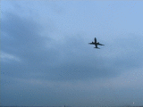
|
As you can see the resulting animation has no extra local colortables.
Instead IM generated a single global color table of
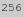
of the 'best' colors based on all the frames in the animation.
Unfortunately this also resulted in the pixel data not compressing as well as
it did before, as a stronger dither was required. The result is a slightly
worse looking animation, that is roughly the same size as the previous.
For this specific video of limited colors, I could even reduce the number of
colors used even further say to only 64 colors without too many problems,
producing an even smaller animation file size. This however is very dependent
on the video sequence used, and may not look very good.
Your own video may have a better result or worse result, especially when
dealing with a video that uses a lot more colors and possibly multiple scenes.
Universal Global Color Table
The better way to generate a 'smaller' GIF animation is to just supply a general
universal range of colors rather than generate the 'best' global color table for
an animation. Use one that should work well regardless of what colors are present
in the original video.
Another reason for doing this is that you can make you video longer without
serious detrimental effects on the color selection, or resorting local color
tables for each frame. Each frame is dithered to the same color map,
completely independently of what other frames are in the animation.
Here I use a '332' color map which
is usually regarded as being a very good standard colormap when no transparency
is needed. I have often seen this colormap (or a 219 color 'web-safe' colormap) used often in various
video formats.
convert -quiet -delay 1 plane.avi -map colormap_332.png plane_ugc.gif
| |
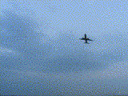
|
This animation has
![[IM Text]](plane_ugc_ctables.txt.gif)
local color tables, and as a result the animation is smaller or
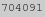
bytes in size.
The problem however is that you will often see an obvious and annoying 'noise'
in areas of constant color. This noise was also present in ALL the previous
video animations. It is only now visible due to the use of a more universal,
and thus more widely spread out color mapping.
The noise is actually caused by the dithering of the reduced color set when
regenerating the image. However, this produces a pseudo-random pattern of
colors that changes from frame to frame, resulting in the appearance of
background noise in the image. See
Problems with E-Dithers for more detail as to why this happens.
We could just turn off the color dithering to remove the 'dither noise'...
convert -quiet -delay 1 plane.avi \
+dither -map colormap_332.png plane_ugc_nd.gif
|
Which has
![[IM Text]](plane_ugc_nd_ctables.txt.gif) local color tables, and is
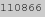
bytes in size.
local color tables, and is
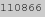
bytes in size.
|
![[IM Output]](plane_ugc_nd.gif)
|
The resulting animation is a very small 1/60th the size of the original
animation, generally because of the large expanses of solid color producing
extremely good pixel compression. But while it fixes the dither noise, and
make for a very small file size, you get color banding instead, which is
generally regarded as a very bad trade-off.
Ordered Dithered Video
The real solution is to use a different color dithering technique, which does
not produce a different pattern from one frame to the next.
The above also used the "
+map"
operator, to ensure that all the images use the exact same global color map
(which the ordered dither already reduced to a maximum of 256 colors). As the
number of colors is already optimal, the "
+map" operator does no dithering, or color reduction.
The resulting dither pattern is not random, and does not change greatly from
one frame to the next. Thus the 'dither noise' has been remove from the
animation resulting in a fixed color pattern from from to frame.
The pattern is also very repetitive allowing much better compression.
And finally as the color map is fixed, it should work reasonably well
regardless of what video is used.
Higher Quality Ordered Dithered Video
This specific video however only uses a small range of colors, mostly various
shades of blue, so it doesn't actually use a lot of the colors provided by a
general uniform colormap.
In fact only
![[IM Text]](plane_od_ncolors.txt.gif)
colors were used in the last video animation!
This is extremely low, and as such also quite visible. But it also means that
this particular animation can benefit from using a large number of 'color
levels' in the ordered dither operation, so as improve the overall quality.
First however we need to determine how many color levels the animation can
handle before it reaches the 256 color limit imposed by both the GIF file
format and the global colormap re-mapping.
The tricky part however is that you must determine these BEFORE you save the
animation to the limited GIF format. And here is the command I use...
convert -quiet plane.avi -ordered-dither o8x8,23 -append -format %k info:
|
Basically I increased and decreased the number of color levels to use, until I
had a figure that was just within the required 256 color limit.
I can then apply the discovered 'color level' choice to the plane animation.
convert -quiet -delay 1 plane.avi \
-ordered-dither o8x8,23 +map plane_od2.gif
|
Which has
![[IM Text]](plane_od2_ctables.txt.gif) local color tables, is
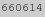
bytes in size, and
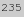
colors.
local color tables, is
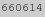
bytes in size, and
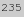
colors.
|
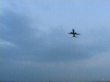
|
As you can see a very high quality, ordered dithered video was generated,
which is on a par with the 'best colormap' global color map version we
generated earlier, but also 1/3 smaller in size, while the 'dither noise' is
now much harder to see.
Of course as the quality is so much higher, it does require a larger file
size, as it doesn't compress as well as the low quality version.
On the other hand you now actually have a good control over the quality vs
file size trade-off in the form of the number of 'color levels' used.
Just remember this technique is a
special case, for an animation that
does not use too many colors. And making the video longer by adding more
frames will also add more colors, and thus require a reduction in the 'color
level' quality control.
This is about the best method of color optimization I have yet seen for
general GIF animations. It removes 'dither noise', provides some quality
control, and retains the ability to use other GIF animation optimization
methods, such as
Frame Optimization.
Compression (Transparency) Optimization
Because this video uses a panning camera, the background of the video
changes from frame to frame. This means the GIF animation will not
Frame Optimize very well.
However we can still use a simple Transparency Optimization to further reduce the final size of the GIF
animation.
convert plane_od2.gif -layers OptimizeTransparency +map plane_opt.gif
|
The result is
![[IM Text]](plane_opt_size.txt.gif) bytes in size, and
bytes in size, and
![[IM Text]](plane_opt_ncolors.txt.gif) colors.
colors.
|
![[IM Output]](plane_opt.gif)
|
That is one extra color, a transparent color index, was added to the image,
and any pixel that does not change the currently displayed color was made
transparent. This in turn generates large segments of transparent areas in
the original animation, as well as repeats of similar pixel sequences, which
generates an improved LZW compression in the final GIF image.
Not bad, the animation is now half that of the direct conversion to GIF,
and still a reasonably high quality.
If you like to add to the above, discuss the techniques to further improve
them, please contact me, or the IM forum. I am more than happy to hear about
your views, techniques and discussions, or look at a specific video/animation
problem you may have.
One such discussion is
Finding the "right levels" for quantization with anim GIF.
Giflossy Compression LZW Optimization
A new tool,
GifLossy which is
a fork of the original
Gifsicle
program modifies the colors of each frame so as to allow LZW to compress the
image much more.
For example, here I applied it to the original GIF animation, asking it to
reduce the colors to a single 256 color table.
gifsicle -O3 --lossy=80 --colors 256 plane.gif -o plane_giflossy.gif
|
Which has an absolutely amazing size of
![[IM Text]](plane_giflossy_size.txt.gif) bytes. It isn't nearly as high a quality as what we achieved using ordered
dither but it is less than 1/2 the size.
bytes. It isn't nearly as high a quality as what we achieved using ordered
dither but it is less than 1/2 the size.
|
|
Emboldened by that above result I decided to use GifLossy on the best ordered dither
result we got, to see if it can make it even smaller.
gifsicle -O3 --lossy=80 plane_od2.gif -o plane_od2_giflossy.gif
|
And we did get an even smaller size of
![[IM Text]](plane_od2_giflossy_size.txt.gif) bytes. Unfortunately we basically lost the high quality ordered dither
result we works so hard to achieve before. Which is disappointing.
bytes. Unfortunately we basically lost the high quality ordered dither
result we works so hard to achieve before. Which is disappointing.
|
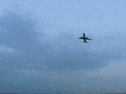
|
De-Interlacing a Video Frame
Not all images are from digital cameras. It is very common to extract images
from a digital video feed from a non-CCD video camera. These images are
interlaced for direct display on a TV, resulting in every second line being a
different frame of the image (interlacing).
For two frames where things aren't moving, the interlacing is usually not very
noticeable. Perhaps producing only a slight edge blurring of the image. But when
a fast moving object is involved, the resulting interlaced image is very
disconcerting, as two frames have been merged together.
Wolfgang Hugemann <Auto@Hugemann.de> (Germany), had this problem and
sent me a snapshot of a crash test, that
Wolfgang took himself. But for demonstration I will use a smaller image
cropped from this one. The techniques however will work on the full sized
image.
convert video_frame.png -crop 100x100+200+470 +repage interlaced.png
| |
![[IM Output]](interlaced.png)
|
  |
Wolfgang Hugemann used a TIFF format for the original video frame, I
converted this to PNG for use on IM Examples. Do NOT be tempted to use
JPEG for these images, until you have finished processing as it will
destroy the low level quality needed for this process.
|
As you can see the interlacing shows two separate frames, as it comes from a
interlaced PAL digital video sequence, (approx 50 half frames per second).
Yes the car was moving very fast and the camera is using a high speed shutter,
producing a very high quality video image. The resulting image is two
interwoven half-frames with the car's side mirror moving quite a distance
during the intervening 1/50 second time period between half frames.
Here we just replace one of the interlaced half-frames (every second line)
with white. This is the standard de-interlacing method, known as a 'BoB'
filter. This was contributed by Wolfgang for IM Examples.
convert interlaced.png -fx "floor(j/2)==j/2 ? u : 1" deinterlace_1.png
| |
![[IM Output]](deinterlace_1.png)
|
Now the
FX operator is slow, so an
alturnative is to create a 'striped image'. Such an image can be generated
from the special "
pattern:Horizontal2" built-in image.
That image can then be overlaid with the original, using a 'Screen' composition method to overlay
white lines, or use 'Multiply' or overlay black lines. For example...
convert -size 100x100 pattern:Horizontal2 \
interlaced.png -compose Multiply -composite deinterlace_2.png
| |
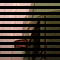
|
Negating the pattern can be used to select the other half of the interlaced
image. Or if you change the '
Multiply' to '
Screen'
you can extract frames with a white background.
As an alternative I tried to fill in the missing frame lines by just
duplicating the previous line.
convert interlaced.png -fx "u.p{i,j-j%2}" deinterlace_3.png
| |
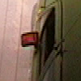
|
You can also use a Pixelization
Technique to shrink and expand an image so as to double up every second
line.
convert interlaced.png -sample 100%x50% \
-sample 100%x200% deinterlace_4.png
| |
![[IM Output]](deinterlace_4.png)
|
And with a slight variation you can combine the lines on both sides to
vertically smooth the half-frame image as part of the resize expansion.
convert interlaced.png -sample 100%x50% \
-resize 100%x200% deinterlace_5.png
| |
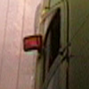
|
The result is a particularly nice extraction of one frame of the interlaced
video image.
If you want to extract the other half-frame from the image you can adjust
the 'sampling:offset (as of IM v6.8.4-7)
convert interlaced.png -define sample:offset=75 \
-sample 100%x50% -resize 100%x200% deinterlace_6.png
| |
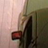
|
Before this version of IM you would need to "
-roll" the image by one pixel, to
achieve the same result.
![[IM Text]](plane_od_ctables.txt.gif) local color tables, and is
local color tables, and is
![[IM Text]](plane_od_size.txt.gif) bytes in size.
bytes in size.
![[IM Text]](plane_od2_find.txt.gif)
{kind=link}
{kind=link}
{kind=link}
{kind=link}
{kind=link}
{kind=link}
{kind=link}
{kind=link}
{kind=link}
{kind=link}
{kind=link}